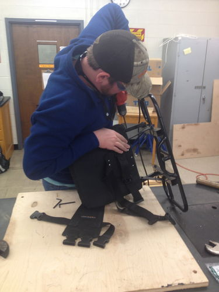

ATV Adaptive Training Vehicle F14
Contents |
Abstract
Design and Create an adapted toy vehicle that can be operated by a 2-3 year old boy without the use of his right hand.
Team members
- Todd Baker
- Chris Parker
- Robert Hibbett
- Chase Adcock
- Bader Alsadan
Problem Statement
A 2 year old boy named Landyn Norris has a rare disease called VACTERL, with many birth defects that include multiple problems with the heart, no spleen, failing kidneys, and an inverted system that feeds toxins into the body instead of cleaning them out. Most noticeable to the human eye is his lack of a radius bone on his right forearm, rendering his right hand virtually useless in gripping or operating anything. This child has gone through multiple major surgeries and countless struggles, but he still desires to grow up as any boy would, playing outside and rolling around on a 4-wheeler. The problem will be transferring all functions on the right upper side of the vehicle meant for the right hand to the feet or left handed position, which has full mobility. The parents have also expressed desires for some type of safety restraint, but there is the problem of the vehicle flipping, in which case you would not want to be tethered to the vehicle.
Design Specifications
1. Must be easy to operate by a 2-3 old boy with no functions relying on the right hand or arm.
2. Must have safety constraints on the vehicle's speed suitable for a 2-3 year old boy.
3. Comfort is a huge consideration for our project and will require a custom made adjustable seat back tailored to the child.
4. Must have emphasis on safety without tethering the child to the 4-wheeler in case it flips.
5. Must be FUN to use.
Background research
=These are our two options for the Adaptive Training Vehicle. With modifications, either one could be a fun and safe toy for Landyn to enjoy. This will help him through his developmental phase by encouraging brain activity and therapeutic enjoyment, which could be very crucial in his recovery.
=Peg Perego Polaris Outlaw ATV 12-Volt Ride-On:
http://www.walmart.com/ip/Peg-Perego-Polaris-Outlaw-ATV-12-Volt-Ride-On/13398160
=Power Wheels Kawasaki Brute Force Camouflage: http://www.fisher-price.com/en_US/brands/powerwheels/products/69696
Existing Tech
4-Wheelers/ATVs already dominate the market, with variants based upon age groups that put constraints on the top speed of the vehicle in order to increase the safety.
Availability
These vehicles are wildly popular and easy to purchase. The differences in price are based on the quality of the vehicle and its performance capabilities.
Problems with current models
1. Safety is an issue since 4-Wheelers have a tendency to flip over when put through rough terrain.
2. Many models have operating devices on the right hand side of the vehicle that must be used by the right hand.
3. The handle bars are situated for a person with a normal arm length, which is not necessarily the case here.
Conceptual Design
Design Concept 1-THE MODERATE
=Concept one is based around mobility and safety. These features will allow him to handle any terrain the ATV can handle by allowing him to take advantage of his legs for stability instead of his arms. The back rest is a simple addition that will ease the strain put on his arm during his ride which will allow for a more enjoyable experience.
Design Concept 2-SAFETY CONSCIOUS
This design focuses totally on the safety of Landyn, giving him fitting backrest, seatbelt, and armrest.
1. Adds a seatbelt to keep Landyn secure.
2. Adds a curved backrest to come around the body partially.
3. Adds an armrest that keeps Landyn's right arm as comfortable as possible.
Design Concept 3-FOOT CONTROLLED
This design focuses on transferring all hand controlled functions to the feet, as well as focusing on comfort.
1. Adds backrest.
2. Transfers braking to feet from the handlebars.
3. Adjusts the handlebars to fit the size of Landyn's arms.
Evaluate concepts/select candidate
| Factors | Concept 1 | Concept 2 | Concept 3 |
|---|---|---|---|
| Safety | 3 | 4 | 3 |
| Comfort | 5 | 4 | 5 |
| Mobility | 5 | 2 | 4 |
| Ease of Use | 4 | 3 | 2 |
| Fabrication Difficulty | 4 | 3 | 1 |
| Cost | 4 | 3 | 3 |
| Total | 25 | 19 | 18 |
| Points Possible | 30 | 30 | 30 |
Detailed Design
Hybrid of the Moderate Concept Design
Detailed description of selected design
Our Design is a mixture of elements from the 3 concepts we came up with initially, along with the feedback from our peers and instructor.
ATV DESIGN
1. Add weight to the bottom center of the vehicle, lowering the center of gravity and keeping the chance of it tipping as low as possible.
2. Modify the handlebars by replacing it with a new solid piece that has the right handle offset 5 inches.
3. Add a solid piece backrest that fits over the former seat that is adjustable to the child's size.
4. Add a harness to the seat to secure the child to the vehicle and prevent him from being thrown off.
5. Add knee flares to the front section of the 4-wheeler to increase the child's hold on the vehicle.
Analysis
Describe three types of analysis to be performed on the design
Engineering analysis 1
For our fist engineering analysis, we looked at the center of gravity. Our main concern with this vehicle is safety, and the number one cause of ATV accidents is rollover. To counter this, we did a static equilibrium equation for the 4 wheeler on various angles of hills. This is the free body diagram of the static equation.
For our balance of equations, we only need to take a moment about one of the wheels (the one towards the bottom of the hill). This leaves us with one unknown, the normal force of the topmost wheel. Once that topmost wheel has a negative normal force, the ATV is going to tip. (Side note: we did not take friction of the wheels into account for the reason that these wheels are plastic, there for this ATV is going to slide way before it ever tips).
For the weight, we found the weight of the ATV we are choosing online and added the average age of a 3 year old (31 lbs) to give us a total starting weight of 80 lbs. We talked about adding weight to the ATV to give it more weight at it's center, and for that we increased the weights by 5 pounds per measurement. We also found the dimensions on the same website and found that they measured it to be (in inches) 48.0 x 31.0 x 26.0. With this information we used the 31.0 inches as the width. For the height of the center of gravity we did a ridiculously high assumption of 20 in. for the first center of gravity. This is represented by this excel sheet.
For our realistic assumption of of the center of gravity being 1/3 of the height of the ATV (9.0 in.). Using the same assumptions as before (width being 31.0 in. and the weight being 80 lbs with 5 lb increments). This is what that looked like.
As we can see, the angle at which this will flip is very high. The weight didn't really have a lot of effect on the angle at which this will fail. We did not do a dynamic model of the center of gravity because of the coefficient of friction isn't defined since we don't know what material the tires are made of.
Engineering analysis 2
For the buckling analysis, we needed to look ahead into machine design. We made a few assumptions right off the bat. 1) No eccentricity
2) Load is distributed equally across plate
3) Length of long tube: 11.31 inches
4) Length of short tube: 5.65 inches
5) Diameter of Tube: 1.8 inches
6) Thickness of Tube: 0.125 in
7) Material is 6061-t6 Aluminum
Now look at the picture to see the equations we used to find our force.
Engineering analysis 3
For bending stress we went back to our Mechanics of Materials class and found the maximum moment on the pipes. We created a safety factor of 5 times the force assumed, and from there we found force that would bend the metal pipes. Look below for the work and equations that lead to our answer.
From Engineering Analysis 2 and 3 we can determine that the pipes will bend long before they buckle. This force is also way beyond the force that our child will be able to exert on the plate.
Inventor/Solid Works Drawings
Seat is modified with slits to hold the full body child harness. Harness is prefabricated and will be bought separately. Seat is constructed of plastic material and the structural additions are 6061 T-6 Aluminum. Seat back is 1 foot high and 3 inches thick.
Brace supports the seat back in order to carry the load both directions. Two tubes made of 6061 T-6 Aluminum run parallel at 45 degree angles to prop the 8.4 X 6.0 inch plate attached to the back of the seat. The tubes have foundations connected to the Power wheel.
Solid Works schematics of knee flares to be placed on the sides of the ATV. These will be mounted on the side of the tank to utilize the strength of his legs to keep him stable on the ATV. The flares will be constructed out of 6061 T6 aluminum with a closed cell foam to line the bottom for comfort.

Handlebar on the right side is modified to extend toward the body 5 inches. This will allow him to use his right arm which is approximately 3/4 the length of his left. We did this to encourage the movement and development of his hand-eye coordination for his right hand.
Bill of Materials
| Item Description | Quantity | Source | Part Number | Price per Unit |
|---|---|---|---|---|
| PowerWheels Brute Force | 1 | K-mart | R8548 | $350.00 |
| Childrens Safety Harness | 1 | Ebay | KG0123 | $29.95 |
| 6061 T6 Aluminum | 1 | Onlinemetals.com | B209 | $39.03 |
| Black Paint | 2 | Walmart | 598367 | $4.77 |
| Closed Cell Foam | 1 | austinkayak.com | 1134 | $34.99 |
| 1/4-20-1/2" | 25 | Fastenal | 99004 | $0.43 |
| 1/4-20 | 25 | Fastenal | 0147964 | $0.11 |
| 1/4 | 50 | Fastenal | 1133004 | $0.04 |
Assembly Instructions
1. The backrest support rack was welded, sandblasted and painted in order to go along with the rest of the original metal on the ATV.
2. The rack and seat were sent to the upholster shop in order to be covered with padding and for the harness to be attached.
3. The right side knee flare was 3D printed and touched up to satisfaction.
4. The ATV was fitted with extrusions and a plate in order for the flare to be mounted correctly using industrial velcro. This is for Landyn growing and therefore the need arising for the knee flare to be adjusted.
5. All added metal pieces are painted to fit in with the color scheme of the original ATV.
Fabrication Process
Getting the ATV and taking it apart to start its modifications.
Disassembling and making sure not to damage its electrical setup.
We found we would need to put in a mounting plate on the side in order to put the knee flare on correctly.
We sandblasted all our welded pieces and backrest system.
We 3D Printed the knee flare with an inscription to Landyn from all of us.
3D Printing was a learning moment for us and required some touch up work.
Chase pop riveting the aluminum plates in order for the knee flare to be mounted.
Robert bolting the flare mount to the ATV.
The finished seat back, fresh from the upholster shop.
Todd fixing the seat back to the rear rack of the ATV. 
Working hard in the student workshops!
Photos of Completed design
Instructions for safe use
1. Under no circumstances should this vehicle be operated without under the supervision of an adult.
2. A helmet will be worn at all times while on the vehicle.
3. Ensure the rider is securely fastened in his harness before starting.
4. Make sure that the knee flare is properly adjusted to the rider's leg in order for the best hold on the vehicle.
5. Do not go over the speeds preset by the vehicle, which has a cap of 5 mph.
6. Do not ride the vehicle in any area that has holes or dangerous obstacles.
7. Do not ride the vehicle on any surface that is at an angle over 20 degrees.
Summary and Conclusions
The last thing we did before delivery was run some slipping and tipping tests using a plywood board and increasing the slope gradually.
We found that the maximum angle before the ATV slipping was 25 degrees.
We found that the maximum angle before the ATV tipping was 45 degrees.
This project was a success in our eyes as we were able to create a product that Landyn could use and have fun on, even with all the fights he has to go through on a daily basis. He really is a hero to the whole group, and our constant thoughts and prayers go out to him and his family as they continue the battle.